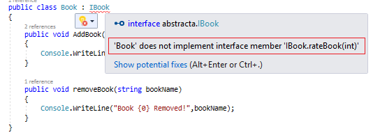
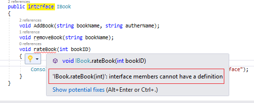
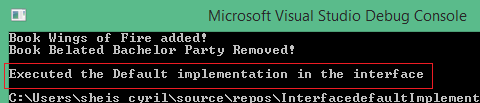
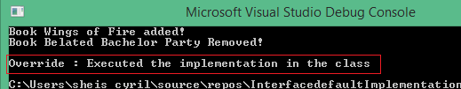

9月份的时候，微软宣布正式发布C#8.0，作为.NET Core 3.0发行版的一部分。C#8.0的新特性之一就是默认接口实现。在本文中，我们将一起来聊聊默认接口实现。
作者：依乐祝
原文链接：https://www.cnblogs.com/yilezhu/p/12034584.html
提前说下：
众所周知，对现有应用程序的接口进行更改是一项很危险的操作。
如果这个接口又在多个项目中使用了，那么进行更改将需要付出更多的精力，以确保它不会在其他地方运行失败。
如果该项目是一个小项目，那么我们可以很容易地识别这些类，并在接口发生变化时进行相应的更改。但是，如果项目是大而复杂的，那么很难识别所有受影响的项目的模块和类。
我们可能需要更多的资源和精力来识别和更改所有项目模块和类。除此之外，我们可能需要重建和交付所有使用该接口的项目。
为了处理这种情况，Microsoft团队在C#8.0中引入了一个新特性--默认接口实现
C#8.0允许我们为接口中的方法指定默认实现。
下面让我们用一个例子来讨论这个问题。假设我们有一个图书馆管理的应用程序。
我们已经为图书处理创建了一个接口IBook。然后，假设我们在IBook接口中声明了两个方法。
请参阅下面的接口结构。
public interface IBook
{
void AddBook(string bookName, string autherName);
void removeBook(string bookName);
} 然后，我们有多个类继承了这个接口，如下所示
public class Book : IBook
{
public void AddBook(string bookName, string autherName)
{
Console.WriteLine("Book {0} added!",bookName);
}
public void removeBook(string bookName)
{
Console.WriteLine("Book {0} Removed!",bookName);
}
}在第一阶段完成之后，我们已经交付了应用程序。
在第二阶段，客户想要一个给书本进行评级的功能。
因此，我们可以在IBook接口中添加另一个方法，如下所示。
public interface IBook
{
void AddBook(string bookName, string autherName);
void removeBook(string bookName);
void rateBook(int bookID);
} 然后，我们需要在继承该接口的所有类中实现该方法。
否则，继承这个接口的类将引发错误，如下所示。

如果我们为接口方法提供一个定义，我们将得到以下错误。

即使我们仅仅只是在一个模块或类中需要这个新方法，我们也应该对使用这个接口的所有模块/类进行更改。
对于一个小应用程序来说，这不会有太大的工作量。但是对于更大的应用程序来说，在接口中进行更改可能会导致更多的问题，如应用程序失败、bug、构建和交付问题等等。
但是在C#8.0中Microsoft 团队通过引入默认接口实现特性为这种情况引入了一种简单的解决方案。
在C#8.0中，我们可以为接口成员定义默认定义。
请参阅下面的接口声明。
public interface IBook
{
void AddBook(string bookName, string autherName);
void removeBook(string bookName);
void rateBook(int bookID)
{
//default logic here
Console.WriteLine("\nExecuted the Default implementation in the interface");
}
} 让我们从Main方法调用该方法，如下所示。
static void Main(string[] args)
{
IBook ib = new Book();
ib.AddBook("Wings of Fire","Dr.A.P.J Abdul Kalam");
ib.removeBook("Belated Bachelor Party");
ib.rateBook(1);
} 输出如下。

由于我们没有覆盖类中的rateBook()方法，因此将执行接口中的默认实现。
但是，如果在类中重写此方法，类中的实现将被执行。
下面的代码中给出了这个方法的一个新的实现，如下所示。
public class Book : IBook
{
public void AddBook(string bookName, string autherName)
{
Console.WriteLine("Book {0} added!", bookName);
}
public void removeBook(string bookName)
{
Console.WriteLine("Book {0} Removed!", bookName);
}
public void rateBook(int bookID)
{
Console.WriteLine("\nOverride : Executed the implementation in the class");
}
} 如果我们运行应用程序，我们将得到以下结果

这似乎是一个有趣的特性，这将有助于我们的架构重构工作，并使接口更加灵活。
快乐学习~~~~~
很久没写文章了，有点生疏了，接下来准备抽时间写写C#中的异步，聊聊我的理解~~~欢迎大家加入.net core两千人交流群637326624交流
原文：https://www.c-sharpcorner.com/article/working-with-default-interface-implementation-in-c-sharp-8-0/